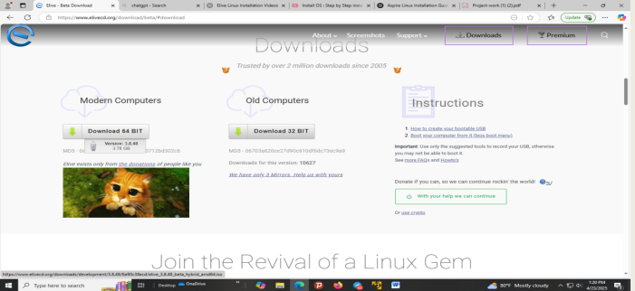
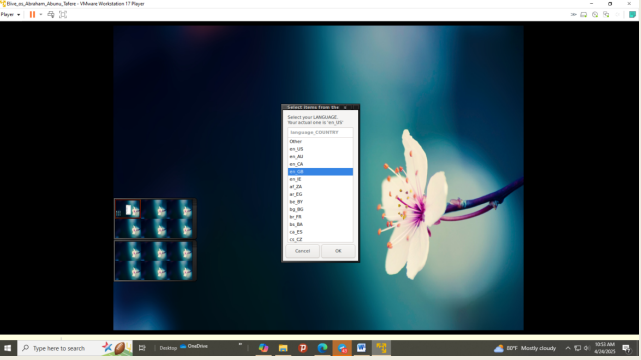
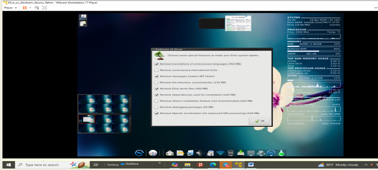
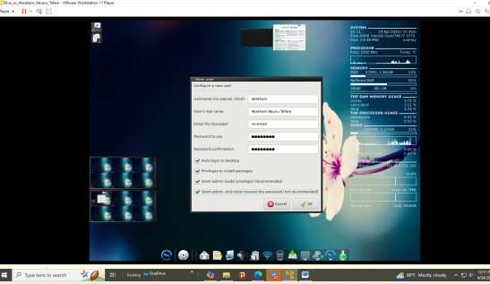
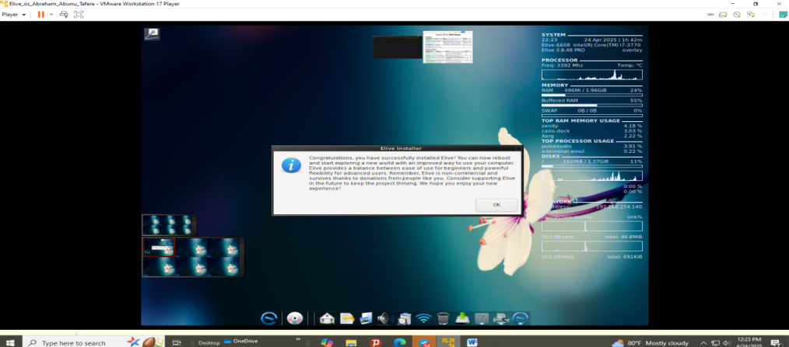
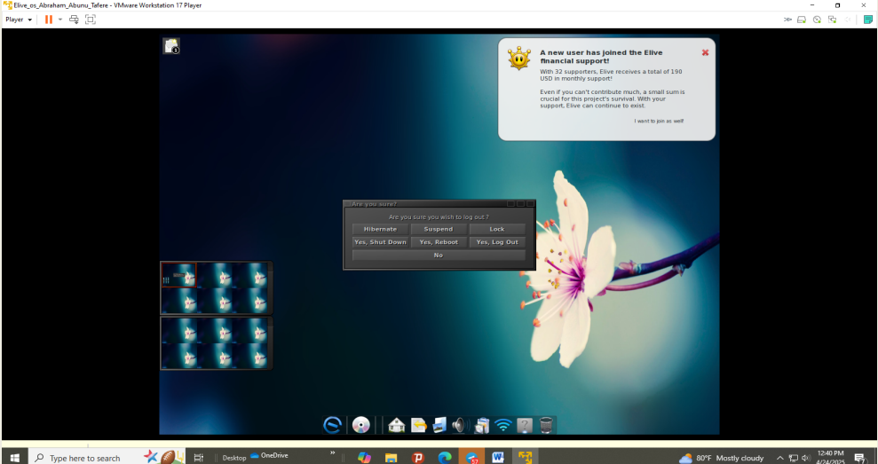
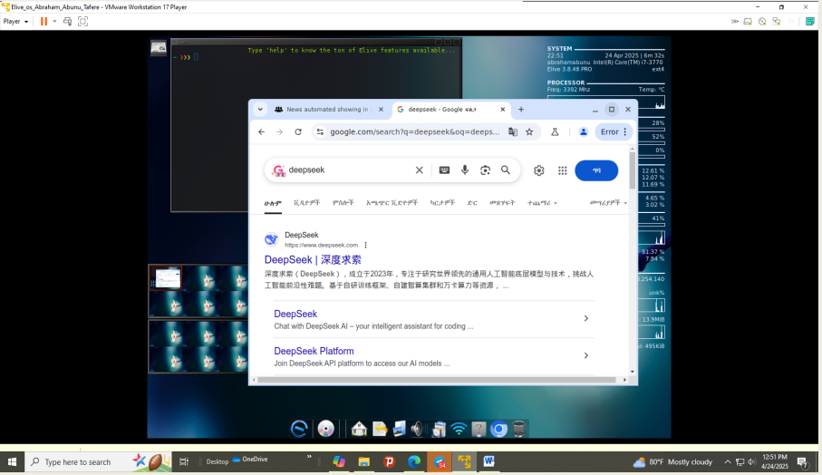

Steps to Install Elive OS in VMware
Step 1: Download Elive OS ISO
Visit the official Elive OS website and download the latest ISO file (~3.5 GB).
Step 2: Create New Virtual Machine
Open VMware Workstation Player → Click Create a New Virtual Machine.
Step 2: Create New Virtual Machine
Select Installer disc image file (iso) and choose your downloaded Elive ISO.
Step 3: Choose OS Type
If VMware doesn’t auto-detect the OS, select manually:
Guest OS: Linux | Version: Ubuntu 64-bit
Step 4: Name and Save Location
Name your VM (e.g. Elive_OS_Abraham) and save to a desired folder.
Step 5: Set Disk Size
Set virtual disk size to at least 20 GB. Choose Store as a single file.

Step 6: Customize Hardware
- Memory:
2 GB - Processors:
2 cores - Network Adapter:
NAT - Display:
Enable 3D acceleration (optional)
Step 7: Start the Virtual Machine
Click Play Virtual Machine. Wait until the Elive OS Live Session boots.
Step 8: Begin Installation
On the desktop, click the Elive Installer icon to launch the setup wizard.
Step 9: Language and Keyboard
Select your preferred language and keyboard layout, then proceed.
Step 10: Partitioning
Choose Automatic Partitioning (recommended). It sets up root and swap.
Step 11: Network and User Settings
Set up network configuration
Step 11: Network and User Settings
username, password, and computer hostname.
Step 12: Confirm and Install
Review your settings, then begin installation. When prompted, remove the ISO.
Step 13: First Boot
Reboot the VM.
Step 13: First Boot
Login with your credentials and enjoy using Elive OS!
Step 14: After Installation
Chrome usage After installation
